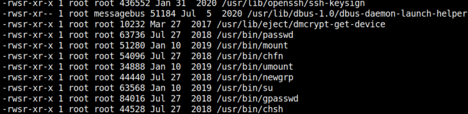

5.2 Check for SUID files
1. Check on the victim machine for any file having SUID permissions with the help of “find” command. By using the following command, we enumerated all binaries having SUID permissions.
gill@driftingblues:~$ find / -perm -4000 -type f -exec ls -al {} \; 2>/dev/null
Output:
